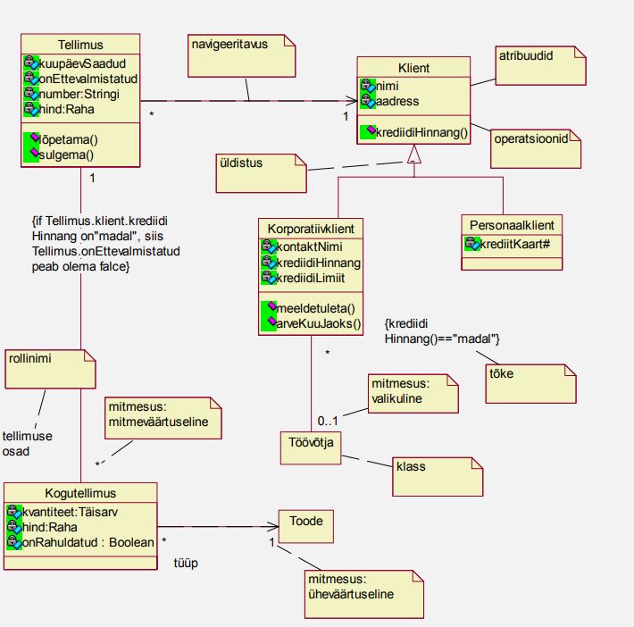
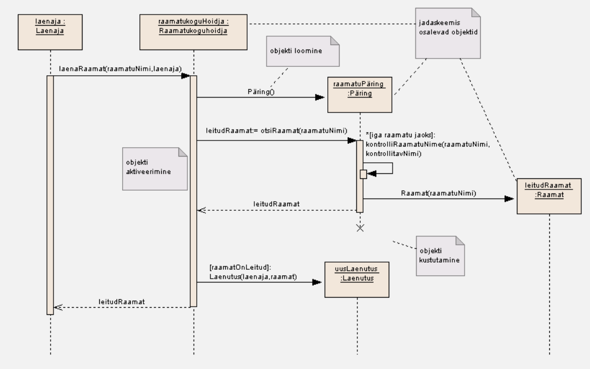
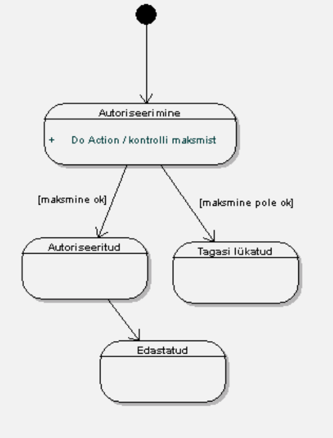
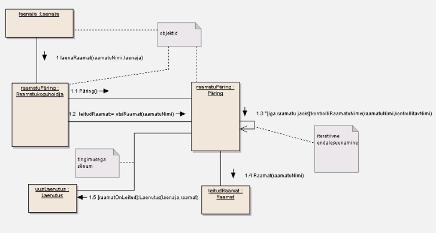

UML on visuaalne modelleeriniskeel, mis aitab tarkvaraarenduses nii kilendile, arendajale endile kui
ka erinevatele muudele isikutele protsessi juures kuvada täpsemalt, milline arendatava toote sisemine
struktuur erinevatel tasanditel olema peaks. UML on aga ka haruskeel, ehk teisisõnu on erinevaid
diagrammiliike nende erinevate tasandite kuvamise jaoks väga palju. UML defineerib ära nende erinevate
tasandite diagrammide notatsiooonid, keskendudes siis nendel spetsiifilistel tasanditel vajamineva
kirjeldusele. Tarkvaratoote käitumise kirjeltamiseks on näiteks käitumisdiagramm, Andmestruktuuri
kirjeldamiseks on näiteks olenidiagramm (ERD). Ja nii, erinevate aspektide kohta. UMLe kasutatakse
nii uue arendustöö kirjeldamiseks, kui ka olemasoleva dokumenteerimiseks.
UML tekkis vajadusest kujutada objektorienteeritud programmeerimise jaoks ühtset keelt, mis kuvaks
protsessi ilma koodita. Algselt tekksi see kui Grady Booch ja James Rumbaugh ühendasid oma diagrammikeeled
kuhu siis aja jookus tekkiski teisi harusid juurde. UML ise on akronüüm inglisekeelsest terminist
"Unified Modeling Language".
Erinevaid UML liike on palju, näiteks:
Kasutuslooskeemi kasutatakse kasutusloomudeli visuaalseks kujuntamiseks, kusjuures kasutusloomudel
võib olla jaotatud paljudeks kasutuslooskeemiteks. See sisaldab multielemente aktorite ja kasutuslugude
jaoks ning näitab seoseid nende elementide vahel.
Kasutusloo modelleerimine määrab arendatava süsteemi piirid, mille täpne paikapanemine (süsteemi piiritlemine)
on eduka süsteemiarenduse esimene tingimus. Pandakse paika esimese väljalaske suurus, mis peaks olema väheste,
kuid tähtsamate funktsionaalustega ning sellise arhitektuuriga, kuhu saaks hiljem soovitud funktsionaalsusi
juurde lisada. Veel tuleks süsteemi jaoks luua põhimõistete sõnastik, kuhu on lisatud kasutuslugude kirjeldus.
Klassidiagramm kirjeldab süsteemis olevate pbjektide tüüpe ning nendevahelisi staatilisi seoseid. Staatilisi
seoseid on kahte põhitüüpi: kooslused (association) ja alamtüübid (subtypes). Klassidiagramm kirjeldab ka klassi
atribuute, operatsioone ning tõkkeid (constraints). Klassiskeemi üheks eesmärgiks on määratleda alus teistele
diagrammidele, kus väljendatakse süsteemi muid aspekte - objektide seisundeid ja objektide koostööd (collaboration)
väljendatakse dünaamika diagrammidega. Klassiskeemi klassi saab otseselt realiseerida objekt-orienteeritud
programmeerimiskeeles (Java, C++, jne), mis toetab klassi ehitust.

Jadaskeem tegeleb interaktsioonis olevate objektide ja nende vahel vahetatavate ajalisele järjestamisele, kuid
ei näita nende vahelisi seoseid. Objekte kujutatakse jadaskeemil kastikestena mis paiknevad vertikaalsete punktiir-
joonte tippudes. Vertikaalsed punktiirjooned on objektide elujoon (life-line) mis kujutab objekti olemasolu teatud
ajavahemikus.

Olekuskeemi kasutatakse klassi, allsüsteemi või kogu süsteemi sisemise käitumise ja olekute kirjeldamiseks. See keskendub
sellele kuidas objektid muudavad oma olekut ajas ja ajast millal sündmus toimub. Sündmuseks võib olla tingimuse tõeseks
saamine, signaali vastuvõtt või operatsiooni väljakutse või etteantud perioodi möödumine. Olekuskeem (statechart diagrams)
võib samastada "klassikaliste" olekuskeemidega (state-transition diagram). Olekuskeem võib omada lähtepunkti (algolek) ning mitut
lõpp-punkti (lõppolekud). Olekuid kujutaatakse ümara kastiga, algolekud väikese täidetud ringiga, lõppolekut "härjasilma"
sümboliga. Oleku siiret joonega, mille ühes otsas nool ülemineku suuna näitamiseks. Oleku siirded võivad olla märgistatud siiret
põhjustava sündmusega.Sündmuse toimumisel viiakse oleku siire tegelikult läbi (siire käivitatakse).
Olek võib sisaldada kolme liiki osasid: Esimene osa näitab oleku nime, Teine osa on mittekohustuslik seisundimuutujate osa,
Kolmas osa on mittekohustuslik tegevuse osa.

Koostöödiagramm esitab prototüüpide ja nendevaheliste linkide ümber kujundatud interaktsioone. Erinevalt jadaskeemist näitab koostöö-
diagramm seoseid prototüüpide vahel. Koostöödiagramm peab klassi nimele alati eelnema koolon. Võimalik on kasutada kahte tüüpi numeratsiooni,
lihtsam tüüp mis näitab vaid sõnumite järgnevust ja üleüldse järgnevuse nägemine on lihtsam. Keerukam kümnendnummeratsiooniga diagramm mis võimaldab
ka kuvada, milline operatsioon kutsub välja millise teise operatsiooni. Koostöödiagramm saab lisada tõpselt samasugust juhtinfomatsiooni, kui
jadaskeemil. Tingimuste näitamiseks saab märkida tingimused sõnumite ette või kasutada iga stsenaariumi jaoks eraldi skeeme. Soovitatav on kasutada
eraldi skeeme kuna väljenduse lihtsus on nende üks tugevavaim külg. Komplekssema käitumise puhul kaotavad nad kiiresti selguse. Kui on soov kirjeldada
kompleksset käitumist ühelainsal skeemil, võiks selleks kasutada tegevusskeemi.
